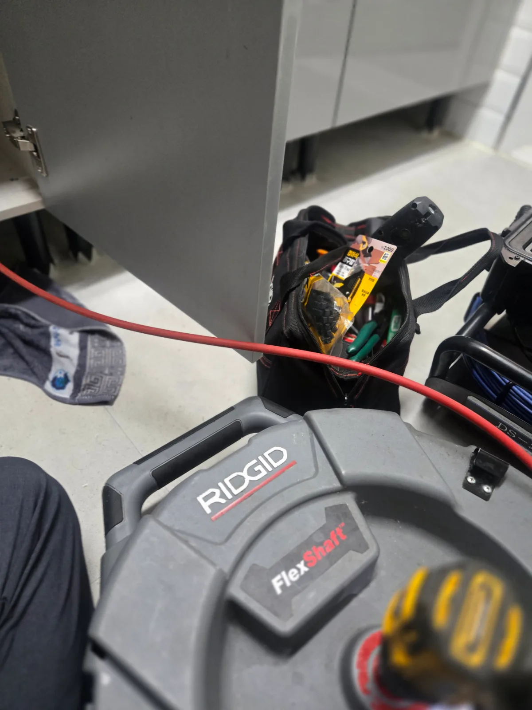

용산구 한남동 싱크대막힘, 현장 도착 후 진단
용산구 한남동 싱크대막힘 신고를 받고 현장에 방문했습니다. 싱크대에 물을 흘려보내자 처음에는 조금씩 내려가는 듯했지만 사용량이 많아지면 배수구 주변으로 물이 다시 차오르는 상태였습니다. 싱크대 하부 배관과 연결 부위를 점검한 결과 누수나 부속 파손은 확인되지 않았으며, 배수관 내부에 기름 슬러지와 음식물 찌꺼기가 축적돼 배수 통로가 좁아진 것으로 판단했습니다. 고객님께 현재 상태와 작업 방법을 설명드린 뒤 석션과 배관스케일링 작업을 진행했습니다.
1단계: 증상 확인과 필요한 장비 작업
먼저 싱크대 하부 배관을 분리하고 석션기를 연결해 배관 내부에 고여 있던 물과 오염물을 흡입했습니다. 여러 차례 압력을 조절하며 석션 작업을 진행하자 기름 성분이 섞인 검은 오염물과 음식물 찌꺼기가 다량으로 배출됐습니다. 그러나 석션 후에도 배수 흐름이 완전히 회복되지 않아 배관 벽면에 단단하게 굳은 기름 슬러지가 남아 있는 것으로 판단했습니다. 반복적인 싱크대막힘을 예방하기 위해 단순 통수 작업에서 끝내지 않고 리지드 샤프트를 이용한 배관스케일링을 추가로 진행했습니다.

2단계: 원인 구간 처리와 정상 작동 확인
싱크대 배수관 내부로 리지드 샤프트를 투입한 뒤 회전 속도와 진입 깊이를 조절하며 배관스케일링 작업을 진행했습니다. 샤프트 체인이 배관 내벽에 부착된 기름 슬러지와 굳은 찌꺼기를 분쇄하면서 배수 통로를 확보했습니다. 작업 중에는 배관내시경으로 내부 상태와 샤프트의 진입 구간을 확인해 배관 손상 없이 막힘 원인을 제거했습니다. 배관 안쪽에서 떨어져 나온 잔존 오염물은 다시 석션으로 흡입해 외부로 제거했습니다.

작업 결과와 재발 방지 안내
배관스케일링을 마친 뒤 싱크대에 충분한 양의 물을 여러 차례 흘려보내며 통수 테스트를 진행했습니다. 물이 고이거나 역류하는 현상 없이 빠르게 배출됐으며 배수 과정에서 발생하던 악취도 함께 개선됐습니다. 배관내시경으로 내부를 다시 확인해 배수 통로를 막고 있던 기름 슬러지가 제거된 것을 확인하고 용산구 한남동 싱크대막힘 작업을 마무리했습니다. 싱크대 배수관은 식용유와 기름기가 많은 음식물 찌꺼기가 반복적으로 유입되면 내부에 슬러지가 형성될 수 있습니다. 기름은 키친타월 등으로 닦아 일반폐기물로 처리하고 음식물 찌꺼기는 거름망을 사용해 배관으로 들어가지 않도록 관리하는 것이 좋습니다.
최종 조치: 석션으로 배관 내부의 오염물과 고인 물을 제거한 뒤 리지드 샤프트를 이용한 배관스케일링으로 기름 슬러지를 분쇄·제거하고 정상 통수 확인
현장 방문 전 확인하는 비용과 작업 범위
신라건축설비는 현장 증상과 배관 구조를 확인한 뒤 필요한 작업과 예상 비용을 안내합니다. 단순 관통으로 해결되는지, 배관내시경·석션·고압세척 또는 추가 장비가 필요한지는 현장 상태에 따라 달라집니다. 출장비와 야간 작업비, 추가 장비 비용이 발생할 수 있는 경우 작업 전에 먼저 설명하고 동의를 받은 범위에서 진행합니다.
업체를 선택할 때 확인할 사항
무조건적인 ‘0원’ 표현보다 실제 작업 범위, 추가 비용 조건, 사용 장비와 사후 대응 기준을 확인하는 것이 중요합니다. 해결되지 않았을 때의 비용 기준과 작업 후 동일 증상 발생 시 점검 범위를 사전에 문의해두면 불필요한 분쟁을 줄일 수 있습니다.
용산구 싱크대막힘 자주 묻는 질문
싱크대막힘은 왜 반복되나요?
용산구 한남동 현장처럼 싱크대 물이 원활하게 내려가지 않고 사용량이 많아지면 배수구 쪽으로 물이 차오르며 악취가 발생함 증상은 원인이 현장마다 다를 수 있습니다. 주방 배수관 내부에 기름때·슬러지·음식물 찌꺼기가 누적되거나 배관 구배와 긴 횡주관 때문에 반복될 수 있습니다. 단순 관통 후 다시 막힌다면 배수관 내부 상태를 확인하는 것이 좋습니다.
싱크대 물이 안 내려가거나 역류하면 싱크대뚫는업체를 불러야 하나요?
물이 천천히 빠지거나 싱크대역류가 반복되면 배수구 입구보다 안쪽 주방 배관에 막힘이 있을 수 있습니다. 현장에서는 배수 상태와 막힌 구간을 확인한 뒤 작업 방법을 정합니다.
싱크대 기름때 막힘은 약품으로 해결되나요?
가벼운 오염은 일시적으로 나아질 수 있지만 굳은 기름 슬러지와 배관 내부 스케일은 약품만으로 충분히 제거되지 않는 경우가 있습니다. 반복 막힘은 장비를 이용한 배관 청소가 필요할 수 있습니다.
싱크대뚫는업체는 어떤 장비로 작업하나요?
막힘 위치와 배관 상태에 따라 석션, 샤프트, 배관내시경, 배관 스케일링 장비 등을 사용합니다. 필요한 장비는 현장 진단 후 결정합니다.
싱크대막힘 비용은 어떻게 정해지나요?
막힘 구간의 길이와 오염 정도, 석션·샤프트·내시경 등 장비 투입 범위에 따라 달라질 수 있습니다. 작업 전 예상 범위와 추가 비용 조건을 먼저 안내합니다.
싱크대 악취도 배수관 막힘과 관련 있나요?
기름 슬러지와 음식물 오염이 배수관 내부에 쌓이면 배수 불량과 함께 악취가 나타날 수 있습니다. 다만 트랩이나 연결부 문제도 있어 현장 상태를 함께 확인해야 합니다.
싱크대막힘 서울·경기 출동지역
신라건축설비는 용산구 한남동 현장을 포함해 서울 25개 구와 경기도 31개 시·군의 배관 문제를 상담합니다. 현장 거리와 기사 배정 상황에 따라 출동 가능 여부를 먼저 안내드립니다.
서울 전 지역
강남구 · 강동구 · 강북구 · 강서구 · 관악구 · 광진구 · 구로구 · 금천구 · 노원구 · 도봉구 · 동대문구 · 동작구 · 마포구 · 서대문구 · 서초구 · 성동구 · 성북구 · 송파구 · 양천구 · 영등포구 · 용산구 · 은평구 · 종로구 · 중구 · 중랑구
경기도 주요 출동지역
수원시 · 용인시 · 고양시 · 화성시 · 성남시 · 부천시 · 남양주시 · 안산시 · 평택시 · 안양시 · 시흥시 · 파주시 · 김포시 · 의정부시 · 광주시 · 하남시 · 광명시 · 군포시 · 양주시 · 오산시 · 이천시 · 안성시 · 구리시 · 의왕시 · 포천시 · 양평군 · 여주시 · 동두천시 · 과천시 · 가평군 · 연천군